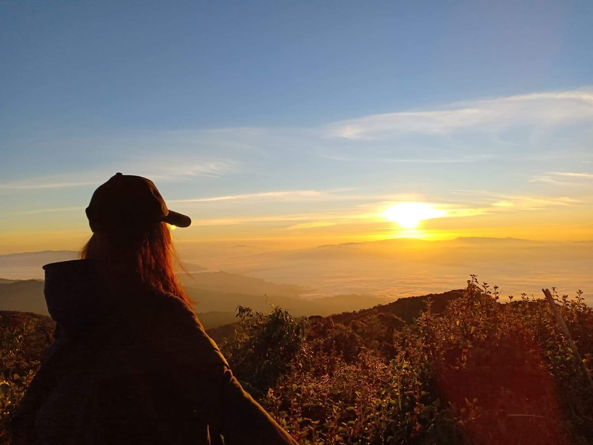

วันที่เดินทาง : 24/12/2018-25/12/2018
การเดินทาง : รถประจำทาง เชียงใหม่-ฝาง (ขนส่งช้างเผือก)
ต่อรถวินมอเตอร์ไซค์เข้าไปที่อุทยาน
เหมารถจากอุทยานขึ้นไปที่ลานกางเต๊นท์
ค่าใช้จ่าย : ค่ารถเชียงใหม่-ฝาง 75 บาท
ค่าวินมอเตอร์ไซค์ 100 บาท
ค่ารถขึ้นอุทยาน 150 บาท (900/6)
ค่าพักอุทยาน 40 บาท (ลืมจ่าย55555)
ค่าคนนำทาง ลืม >< (แต่ไม่แพง)
ค่าอาหาร 200 บาท
สิ่งที่ต้องเตรียม : เสื้อกันหนาวหนาๆ หรือเอาไปหลายๆ ตัว
เตรียมร่างกายให้พร้อม
ความจริงทริปนี้วางแผนไว้ว่าจะไปดอยหลวงเชียงดาว
แต่หลังจากศึกษาหาข้อมูลนานมากก็พบว่างบประมาณอัน
น้อยนิดของเราที่เก็บมาทั้งปีนั้นไม่พอที่จะไปขึ้นดอยหลวงจึง
เกิดการเปลี่ยนแผนกระทันหันและเลือกจะไปดอยผ้าห่มปกแทน
เพราะแอบเห็นว่ามีลานกางเต๊นท์ที่สูงสุดในประเทศ แต่การที่จะไปนอน
บนลานกางเต๊นท์ที่สูงสุดนั้นต้องนั่งรถขึ้นภูเขาจากที่ตั้งของอุทยาน
ผ่านทางโค้งประมาณ 1000 โค้งได้ นั่งรถไปก็คิดถึงหน้าแม่ไปด้วย
กลัวตกรถ555
เราเริ่มเทรคตั้งแต่ตีสี่เพื่อที่จะขึ้นไปบนยอดเขาให้ทันดูพระอาทิตย์
ขึ้น ระหว่างทางก็หอบแฮกเพราะไม่ได้ออกกำลังกายก่อนไป กลาย
เป็นว่าต้องพักเหนื่อยระหว่างทางบ่อยมากๆ 5555 ใช้เวลาประ
มาณชั่วโมงครึ่งก็ขึ้นมาถึงยอดเขาแล้วอากาศข้างบนหาวมากกกกกๆ
จนต้องไปนั่งผิงไฟรอพระอาทิตย์ขึ้น จำได้ว่าตอนนั้นใส่เสื้อ
กันหนาวประมาณ 5 ชั้น แต่ก็ยังยืนหนาวปากสั่นอยู่ดี TT
พอแสงเริ่มมาก็เริ่มเป็นวิวทิวทัศน์รอบตัวชัดเจนมากขึ้น เป็นการยืนอยู่
บนยอดเขาที่ด้านหลังรายล้อมไปด้วยภูเขาเป็นแนวยาวและด้านหน้า
ก็เป็นพระอาทิตย์กับหมอกหนาๆ ประทับใจมากๆ
 |
 |
 |
 |
|